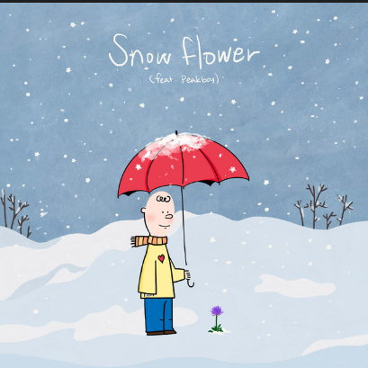
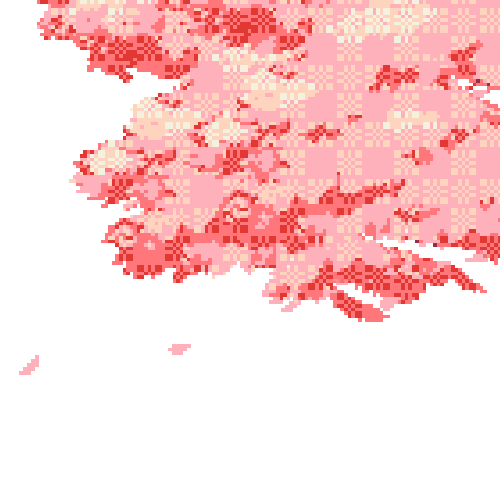
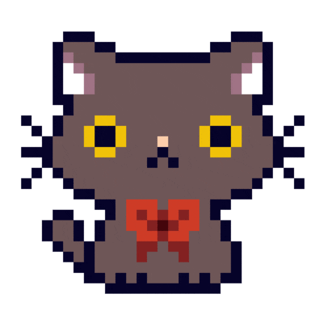

Snow Flower
⏸ Pausar
Espero que hoy tengas un día increíble y que lo disfrutes mucho. Tal vez yo esté dormido porque me desvelé, pero aun así quería desearte algo especial. Ojalá tengas un día muy bonito. 🌸

